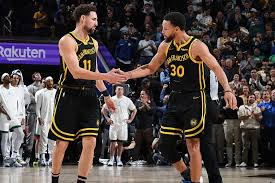
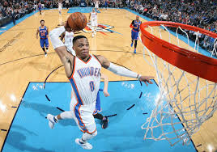

Recordes mais difíceis da história da NBA:
A NBA é a maior liga de basquete do mundo, os maiores jogadores da história desse esporte em sua maioria jogaram ou jogam lá.
É aonde se encontra o maior nível e prestígio do basquete, tendo apenas jogadores de alto nível do mundo todo
Agora que conhecemos um pouco da história da NBA, estas abaixo são as listas dos maiores recordes da história da NBA:
Mais pontos:
LeBron James - Com 49.737 pontos, ele ultrapassou Kareem Abdul-Jabbar em 2023 para se tornar o maior pontuador da história da NBA.
Kareem Abdul-Jabbar - Com 38.387 pontos foi o recordista anterior e manteve a posição por muitos anos.
Karl Malone - Com 36.928 pontos foi umm dos maiores alas-pivôs de todos os tempos, conhecido pela sua consistência e longevidade.
Kobe Bryant - Com 33.643 pontos se tornou ícone do Los Angeles Lakers e conhecido por sua habilidade ofensiva e mentalidade competitiva.
Michael Jordan - Com 32.292 pontos é considerado por muitos como o melhor jogador de basquete de todos os tempos, famoso por sua pontuação prolífica e conquistas.
Mais cestas de três
Stephen Curry - 3.390 cestas de três pontos ele revolucionou o jogo com seu arremesso de longa distância.
Ray Allen - 2.973 cestas de três pontos é conhecido por seu arremesso rápido e momentos cruciais.
James Harden - 2.761 cestas de três pontos foi um mestre em criar espaço com seu passo para trás.
Reggie Miller - 2.560 cestas de três pontos foi um dos primeiros especialistas em três pontos, famoso por sua mentalidade de clutch.
Klay Thompson - 2.254 cestas de três pontos conhecido por sua eficiência e rapidez, com recorde de 37 pontos em um quarto.

Mais triplo-duplos
Russell Westbrook - 198 triplos-duplos ele é conhecido por sua energia incansável e versatilidade em quadra.
Oscar Robertson - 181 triplos-duplos, pioneiro dos triplos-duplos, estabeleceu um padrão para as gerações futuras.
Magic Johnson - 138 triplos-duplos, revolucionou a posição de armador com seu tamanho e habilidade.
Jason Kidd - 107 triplos-duplos um mestre na distribuição de bola e controle do jogo.
LeBron James - 107 triplos-duplos ele combina tamanho, habilidade e inteligência para impactar todas as facetas do jogo.

Estes são os maiores e mais difíceis de bater recordes da história da NBA.